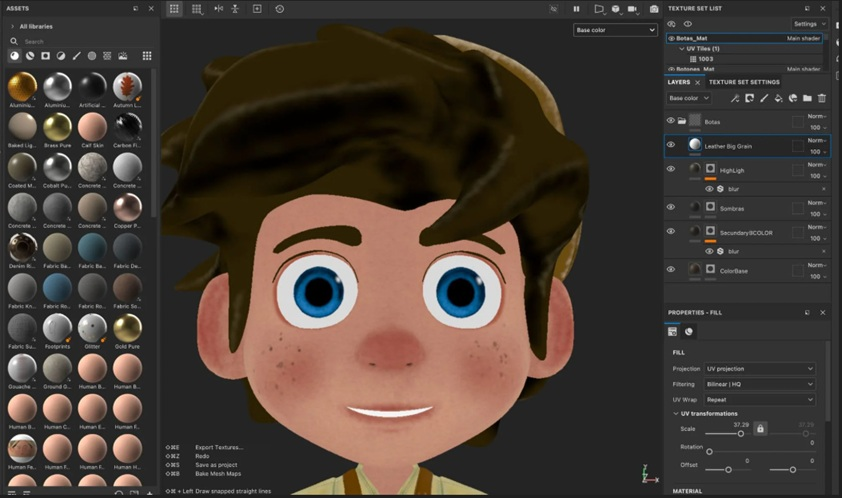

Grade 11 – Assessment
5-Item Quiz | Passing Score: 3
Directions: Choose the letter of the correct answer. For items with images, carefully examine the image and read the question before selecting the correct answer.
1. Which term refers to the materials or substances used by an artist, composer, or designer to create a work of art?
Explanation: Medium refers to the materials or substances used to create an artwork such as paint, clay, fabric, or digital media.
2. It is the pre-design phase under Architectural Designing.
Explanation: Programming is the pre-design phase where the architect identifies the needs and requirements of the project.
3. Which art form focuses on designing outdoor spaces using softscape and hardscape materials?
Explanation: Landscape Architecture designs outdoor environments using softscape and hardscape materials.
4. Which material is commonly used in this art form?
Explanation: Painting commonly uses oil or acrylic paint applied on canvas using brushes.
5. Which type of art form does this belong to?

Explanation: Animation created using computer software belongs to Media Arts.